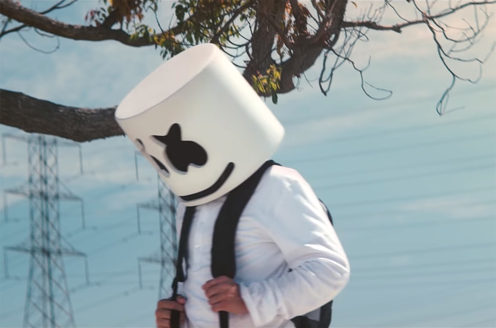

HITOVI
Alone
Datum izdavanja 2. srp 2016
Pjesma ima 2.3 milijarde pregleda. 3+ milijuna primjeraka je prodano te je pjesma s 3 platinum certifikata. Osvojila je 3. mjesto za "US hot dance/ellectronic Songs, 28. na "US Billboard Hot 100", 11. na "Canadian Hot 100".
Friends
Datum izdavanja 9. velj 2018
Duet s Engleskom pjevačicom Anne-Marie. Autor pjesme je Nat Dunn. Pjesma ima 1 milijardu pregleda. Pjesma i ako manjeg broja pregleda osvojila je više nagrada te dostigla veću popularnost. Prvo mjesto u slušanosti osvojila je u Njemačkoj, Austriji, Rusiji, Nizozemskoj te mnogim drugima. Osvojila je prvo mjesto za "US Dance/Mix Show Airplay (Billboard). Prodata je u preko 9.6 milijuna primjeraka."